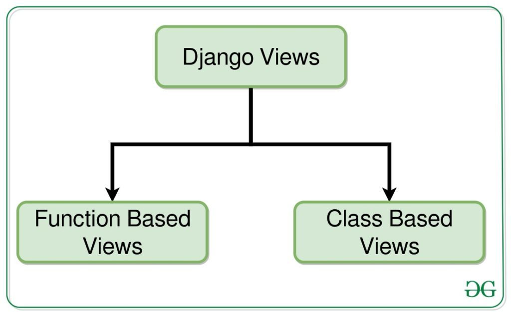

UD6: MULTICAPA - DATOS Y MODELO DE OBJETOS DEL DOCUMENTO¶

INTRODUCCIÓN¶
En esta unidad vamos a empezar a utilizar el framework de desarrollo web llamado Django, basado en el lenguaje de programación Python.
En primer lugar desarrollaremos, de forma guiada, un portfolio similar al de las unidades anteriores, de forma que podamos ver las similitudes y diferencias entre los dos procesos. También vamos a utilizar la tecnología Docker para ejecutar nuestro código en un contenedor de Python.
Finalmente, emplearemos todos los recursos expuestos para empezar el segundo proyecto del curso, que abarcará tres unidades.
EVALUACIÓN¶
El presente documento, junto con sus correspondiente boletín de actividades (publicado adicionalmente), cubren los siguientes criterios de evaluación:
| RESULTADOS DE APRENDIZAJE | CRITERIOS DE EVALUACIÓN |
|---|---|
| RA5. Desarrolla aplicaciones Web identificando y aplicando mecanismos para separar el código de presentación de la lógica de negocio. | a) Se han identificado las ventajas de separar la lógica de negocio de los aspectos de presentación de la aplicación. b) Se han analizado y utilizado mecanismos y frameworks que permiten realizar esta separación y sus características principales. e) Se han identificado y aplicado los parámetros relativos a la configuración de la aplicación web. f) Se han escrito aplicaciones web con mantenimiento de estado y separación de la lógica de negocio. g) Se han aplicado los principios y patrones de diseño de la programación orientada a objetos. h) Se ha probado y documentado el código. |
| RA6. Desarrolla aplicaciones web de acceso a almacenes de datos, aplicando medidas para mantener la seguridad y la integridad de la información. | a) Se han analizado las tecnologías que permiten el acceso mediante programación a la información disponible en almacenes de datos. b) Se han creado aplicaciones que establezcan conexiones con bases de datos. c) Se ha recuperado información almacenada en bases de datos. d) Se ha publicado en aplicaciones web la información recuperada. e) Se han utilizado conjuntos de datos para almacenar la información. |
ENTORNOS VIRTUALES EN PYTHON¶
En las aplicaciones basadas en Python es frecuente utilizar paquetes y módulos que no forman parte de la librería estándar. Muchas veces, determinadas aplicaciones necesitan de determinadas versiones de librerías específicas, y esto implica que la instalación local de Python puede no llegar a cumplir las especificaciones de todas las aplicaciones.
La solución a este problema son los entornos virtuales: se trata de un árbol "autónomo" de directorios que contiene una instalación de Python, para una determinada versión y con una serie de paquetes adicionales.
De esta forma, diferentes aplicaciones pueden utilizar diferentes entornos virtuales, dependiendo de la versión, tanto de Python, como de los paquetes adicionales para que la aplicación funcione correctamente. La siguiente imagen ilustra un mismo equipo en el que existen diferentes entornos virtuales, con diferentes versiones de Python, para proyectos diferentes:

Creación de un entorno virtual¶
El módulo utilizado para la creación de entornos virtuales es venv. Para instalarlo en Ubuntu, el comando es:
sudo apt install python3-venv
El comando para crear un entorno virtual en un directorio determinado es:
python3 -m venv app-env
Este comando creará el directorio "app-env" con un árbol de directorios que contienen el intérprete de Python y archivos de soporte. El parámetro "-m" indica al intérprete de Python que se va a ejecutar un módulo, en este caso "venv", como un script. Si quieres saber más sobre los módulos en Python, aquí tienes más información.
En este enlace se pueden encontrar instrucciones para instalar un entorno virtual en Windows y Mac.
Para activar el entorno virtual de Python, se utilizará uno de los siguientes comandos, dependiendo del sistema operativo (desde la ruta en la que se encuentre la carpeta "app-env"):
- En Windows:
app-env/Scripts/activate.bat
- En Linux o MacOS:
source app-env/bin/activate
(app-env) usuario:\$
Gestión de paquetes mediante pip¶
Se pueden instalar, actualizar o quitar paquetes utilizando el programa pip, que instala paquetes, por defecto, del índice de Paquetes de Python (https://pypi.org), que puede ser explorado manualmente mendiante un navegador web.
pip tiene una serie de comandos (install, freeze, uninstall, etc.), que pueden ser consultados en la documentación oficial.
Se puede instalar la última versión de un paquete utilizando su nombre, de la forma:
(app-env) $ pip install flask
Es posible también instalar la versión específica de un paquete, especificando su nombre, seguido de "==" y finalmente la versión. Ejemplo:
(app-env) $ pip install requests==2.6.0
(app-env) $ pip install --upgrade requests
pip show mostrará información de un paquete en particular.
pip list mostrará todos los paquetes instalados en el entorno virtual.
pip freeze muestra una lista similar a pip list, pero en un formato tal que se pueda utilizar por pip install para instalar esta lista de paquetes en un solo comando. Como práctica comúnmente aceptada, se vuelca el resultado de pip freeze en un fichero \"requirements.txt\", de la forma:
(app-env) $ pip freeze > requirements.txt
(app-env) $ pip install -r requirements.txt
CREACIÓN DEL PRIMER PROYECTO DJANGO¶
Vamos a crear nuestro primer proyecto con Django.
Creamos un primer entorno virtual llamado \"portfolio-venv\" en una carpeta de nuestra elección, donde lanzamos el siguiente comando mediante consola:
python3 -m venv portfolio-env
source portfolio-env/bin/activate

Antes de ejecutar la instalación de Django, vamos a averiguar cuál es la última versión LTS (Long-term Support), que es la que nos va a proporcionar mayor duración en el soporte (con otras ventajas). Consultamos el siguiente enlace, y vemos que la más reciente es la 5.2 y además es LTS, con lo cual es la candidata ideal para nuestro nuevo proyecto. Aún así, hay que valorar también que la 4.2 (también LTS) va a tener soporte hasta marzo de 2026. Las versiones existentes en este momento se pueden consultar en la imagen del enlace anterior:

La ventaja de elegir la última versión va a ser que vamos a tener acceso a las últimas funcionalidades; las desventajas van a ser que nos vamos a poder encontrar más bugs (errores), y que puede que muchos paquetes que nos proporcionan funcionalidad adicional, no sean compatibles con esta versión. Las ventajas/desventajas de elegir la última versión LTS son las inversas a las mencionadas para la última versión.
Aunque es una elección no siempre obvia, nos decantaremos por instalar la última LTS (la 5.2) porque es la última versión y además LTS.
Con todo ello, el comando para instalar la versión 4.2 será el siguiente:
pip install Django==5.2

Creamos el fichero requirements.txt:

Estamos preparados para crear nuestro primer proyecto Django, que vamos a llamar portfolioDjango. Ejecutamos el siguiente comando:
django-admin startproject portfolioDjango

Si abrimos dicho directorio con Visual Studio Code (u otro IDE, como PyCharm), veremos la estructura de directorios que se ha creado (creamos también el workspace):

Para que se lance esta aplicación, lanzamos el siguiente comando, desde el directorio donde se encuentra el fichero manage.py:
python manage.py runserver

Nos informa (entre otras cosas que vamos a ignorar en estos momentos) de que nuestra aplicación se ha lanzado en el puerto 8000. Lo probamos, y tenemos lo siguiente:

Por tanto, hemos podido lanzar nuestra primera aplicación Django.
PORTFOLIO CON DJANGO¶
Continuamos donde lo dejamos en el apartado anterior, y vamos a construir un portfolio parecido al de las unidades anteriores (en este mismo documento).
Configuración¶
El primer fichero en el que nos hemos de fijar, de los que se ha creado automáticamente al generar el proyecto, es el llamado settings.py. En este fichero va a residir mucha de la configuración de nuestra aplicación. Las partes más importantes a destacar en estos momentos son las siguientes (en este enlace las tienes todas, para la versión 5.2):
- SECRET_KEY: es un string autogenerado, que nunca hemos de compartir públicamente, si pretendemos desplegar nuestra aplicación web en un entorno de producción (deberíamos ocultarlo si lo subimos públicamente a Github, por ejemplo). El valor de esta variable se utiliza para proporcionar criptografía en la firma de sesiones de usuarios, y si se conoce su valor, se podrían alterar las cookies que envía el servidor y atacar nuestra aplicación.
- DEBUG: indica si estamos en modo debug. Si es True, en caso de que se produzca un error en nuestra aplicación, se mostrará en el navegador información para poder depurar dicho error. Entre estos detalles se muestra información muy sensible, que solo es conveniente mostrar en un entorno de desarrollo. Por tanto, en un entorno de producción, esta variable ha de tomar el valor False.
- ALLOWED_HOSTS: se trata de una lista con los nombres de host/dominios que esta aplicación puede servir como parte de la URL, utilizada en entornos de producción para evitar determinados tipos de ataques HTTP. Típicamente, para desarrollo tendrá los valores "localhost" y "127.0.0.1". Para un entorno de producción, introduciremos el nombre de nuestro dominio, con y sin "www" al principio.
- INSTALLED_APPS: son los paquetes adicionales que se utilizan en la aplicación web. Según la nomenclatura de Django, estos paquetes se llaman "aplicaciones". Lo veremos con más detalle en uno de los siguientes apartados, donde crearemos una nueva aplicación, y descubriremos cómo encontrar aplicaciones ya desarrolladas que hagan determinadas cosas por nosotros.
- TEMPLATES: Mediante este array configuraremos los tipos de plantillas y los directorios donde se encuentran. Las plantillas son ficheros HTML con código Python incrustado, lo cual las convierte en dinámicas.
- DATABASES: Al generar el proyecto se preconfigura la utilización de una base de datos sqlite3, una base de datos ligera y adecuada para tareas de desarrollo web, con pocos datos. Pero se podría establecer otra base de datos, de mayor envergadura, en un entorno de producción (por ejemplo, Postgresql).
- LANGUAGE_CODE: Idioma por defecto en el que queremos servir por defecto el contenido de la aplicación web.
- TIME_ZONE: Uso horario en el que está basado nuestra aplicación web.
- STATIC_URL y STATIC_ROOT: Se utilizan para configurar la ruta donde se servirán los ficheros estáticos de nuestra aplicación web.
Con todo ello, vamos a cambiar los valores para algunas de estas variables:
LANGUAGE_CODE = 'es'
TIME_ZONE = 'Europe/Madrid'
STATIC_URL = '/static/'
STATIC_ROOT = os.path.join(BASE_DIR, 'static')
Además, vamos a modificar la variable TEMPLATES, mediante la que vamos a especificar que nuestras plantillas se localizarán en el directorio templates. Creamos esta carpeta, a la misma altura que el fichero manage.py:

Y cambiamos la variable TEMPLATES de settings.py de forma que el elemento DIRS tenga el siguiente valor:
'DIRS': [**os**.path.join(BASE_DIR, 'templates')],
import os
Aplicaciones¶
En primer lugar, cabe diferenciar dos conceptos clave en Django:
- Proyecto: se identifica con el conjunto de la aplicación web desarrollada, y su directorio raíz se encuentra a la altura (normalmente) del fichero manage.py.
- Aplicaciones (o app): se trata de paquetes escritos en Python que proveen al proyecto de unas funcionalidades particulares. Son suficientemente independientes entre sí para poder ser reutilizadas en diferentes proyectos.
En el siguiente enlace se encuentra una recopilación (no exhaustiva) de algunas aplicaciones en Django que puedes reutilizar en tus proyectos:
Algunas de las aplicaciones que utilizaremos durante el resto del curso serán:
- Django Crispy Forms: nos servirá para controlar mejor el aspecto y funcionamiento de los formularios.
- Django Rest Framework: utilizado para la creación de servicios REST.
¿Por qué necesitamos saber qué es una aplicación en estos momentos? Para desarrollar módulos de funcionalidades nuevas para nuestro proyecto, las tenemos que crear en forma de aplicaciones. Podemos crear aplicaciones nuevas, cada una de ellas con un propósito particular (de forma que modularizamos nuestra aplicación web con bloques independientes) o también podemos utilizar aplicaciones existentes, como se ha explicado antes.
Algunas de estas aplicaciones pertenecen al propio núcleo (core) de Django, y el proyecto viene configurado por defecto con algunas de ellas. Si nos fijamos en la lista INSTALLED_APPS, veremos que contiene 6 entradas:
INSTALLED_APPS = [
'django.contrib.admin',
'django.contrib.auth',
'django.contrib.contenttypes',
'django.contrib.sessions',
'django.contrib.messages',
'django.contrib.staticfiles',
]
Queremos crear ya nuestra propia aplicación, porque queremos empezar a desarrollar nuestro portfolio. Para ello, vamos a crear una nueva aplicación con el siguiente comando, que ejecutamos desde la carpeta donde esté manage.py (con el entorno virtual activado):
python manage.py startapp portfolioapp
Revisamos la estructura del proyecto, y podemos ver que se ha creado una carpeta nueva con nombre \"portfolioapp\", con multitud de ficheros nuevos:

Aún no sabemos para qué sirven estos ficheros, lo iremos descubriendo a lo largo de la unidad. Cabe mencionar que, cada vez que creemos una app para un proyecto, se creará una carpeta diferente, con los mismos archivos iniciales.
Recapitulando: hemos creado una aplicación nueva, aún no hace nada, pero ya tiene su lugar en nuestro proyecto. ¿Es suficiente con lo que hemos hecho para conectarla a nuestro proyecto? Falta un pequeño detalle: en la lista INSTALLED_APPS citada anteriormente, hemos de añadir nuestra nueva app para que los cambios tomen efecto. Tras la modificación, dicha variable queda del siguiente modo:
INSTALLED_APPS = [
'django.contrib.admin',
'django.contrib.auth',
'django.contrib.contenttypes',
'django.contrib.sessions',
'django.contrib.messages',
'django.contrib.staticfiles',
'portfolioapp',
]

¿Te acuerdas de aquel mensaje en rojo que nos aparecía al levantar la aplicación web? Dice exactamente:
You have 18 unapplied migration(s). Your project may not work properly until you apply the migrations for app(s): admin, auth, contenttypes, sessions.
Run \'python manage.py migrate\' to apply them.
El mensaje hace referencia a migraciones de apps, algunas de las cuales, "casualmente", aparecen en la lista INSTALLED_APPS. Y nos proporciona un comando para solventar el problema.
Parece ser que lo que hemos visto en este apartado no era todo lo que necesitábamos para acabar de configurar nuestras apps. Esta disyuntiva la resolveremos en el siguiente apartado, cuando implementemos los modelos de nuestra nueva aplicación "portfolioapp".
Modelos¶
En el anterior proyecto en PHP implementamos la conexión a la base de datos en la última fase. Ahora vamos a hacerlo al revés, vamos a empezar a utilizar la BBDD desde el inicio del proyecto. Para ello necesitamos tablas donde almacenar la información, ¿cómo las vamos a crear con Django? Muy fácil: las vamos a crear mediante el fichero models.py que se encuentra dentro de nuestra aplicación, mediante los llamados "modelos" de Django.
Un modelo representa una fuente de información única de datos, contiene los campos y comportamiento de los datos a almacenar, y generalmente un modelo se transforma en una tabla de base de datos.
Puedes encontrar toda la información sobre los modelos de Django en este enlace.
Definición¶
Vamos a empezar a crear dos modelos: el de proyecto y el de categoría. Vamos a introducir lo siguiente en portfolioapp/models.py:

Hay que hacer notar que:
- Para hacer un campo opcional, se establecen los atributos null y blank a True.
- También se pueden dar valores por defecto, como el caso de fecha_creacion.
- Es conveniente definir el atributo verbose_name en todos los campos, lo cual será muy importante cuando veamos el administrador de Django.
En este enlace tienes una descripción de todos los tipos de campos.
Cabe hacer notar que no hemos definido ninguna columna \"id\" para nuestras tablas. Django se ocupa directamente de hacer esto por nosotros, según se detalla en este enlace. A esta columna la podemos referenciar con "id" o "pk", indistintamente.
Vamos a dedicar un apartado exclusivo para la definición del campo que contendrá la imagen del proyecto.
Migración¶
En el apartado anterior hemos definido los modelos. Esto es una declaración de intenciones, no hemos creado realmente aún nada en la base de datos sqlite3 (configurada en settings.py). ¿Cómo trasladamos esta definición de modelos a la base de datos entonces? Facilísimo: mediante los comandos makemigrations y migrate.
Podemos aplicar estos comandos a todas las aplicaciones de nuestro proyecto, o lo podemos realizar para una app en particular. Vamos a migrar solo la aplicación que hemos creado "portfolioapp".
Ejecutamos el primer comando:
python manage.py makemigrations portfolioapp

Nos fijamos que se ha creado un nuevo directorio en la carpeta portfolioapp llamado "migrations", y dentro tenemos un fichero 0001_initial.py:

Si abrimos este fichero de migración veremos cómo se ha traducido la definición de los modelos a sentencias SQL.
IMPORTANTE: no modifiques nada de este fichero, se genera automáticamente.
Vamos a migrar estos cambios para que se hagan efectivos en la BBDD (para que sean ejecutados realmente por el gestor de base de datos). Para ello ejecutamos el siguiente comando:
python manage.py migrate portfolioapp

Ahora podemos asegurar que las tablas correspondientes se han creado en la base de datos.
Pero, tenemos aún un problema pendiente desde el principio. Es el problema que se señala cada vez que iniciamos nuestra aplicación web, señalado por el siguiente mensaje:
You have 18 unapplied migration(s). Your project may not work properly until you apply the migrations for app(s): admin, auth, contenttypes, sessions.
Run 'python manage.py migrate' to apply them.
Este mensaje se debe a que todas aquellas apps que venían por defecto en la variable INSTALLED_APPS (en settings.py) vienen con migraciones iniciales que aún es necesario trasladar a la base de datos. Más adelante (en otra unidad) veremos cómo crear ficheros de migración iniciales para nuestras propias apps, de forma que podamos crear datos iniciales en nuestra BBDD de forma automática.
Por tanto, para solventar este error de una vez por todas, vamos a ejecutar el comando migrate, pero para todas las apps. Para ello, simplemente no especificamos el nombre de la app:
python manage.py migrate

Ahora iniciamos la aplicación:

Y ya no nos aparece el mensaje de error anterior.
ImageField¶
En este apartado vamos a modificar el modelo Proyecto para poder incluir un nuevo campo al cual asociar una imagen.
Django ofrece dos tipos de campos de modelo que implican subir un archivo mediante la aplicación web: FileField y ImageField. Cada uno de estos tipos de campos tiene particularidades, pero los dos necesitan una ruta en la cual almacenar los archivos que se envían desde el lado cliente (agente de usuario). Esta ruta se determinan mediante las variables MEDIA_ROOT y MEDIA_URL, especificadas en settings.py.
En estos momentos no tenemos configuradas estas variables, vamos a incluirlas en dicho fichero con los siguientes valores (debajo de la configuración de STATIC_URL):
MEDIA_ROOT = os.path.join(BASE_DIR, 'media/')
MEDIA_URL = '/media/'
from django.contrib import admin
from django.urls import path
from django.conf import settings
from django.conf.urls.static import static
urlpatterns = [
path('admin/', admin.site.urls),
]
if settings.DEBUG:
urlpatterns += static(settings.MEDIA_URL, document_root=settings.MEDIA_ROOT)
Solo nos queda una dependencia para poder modificar el modelo Proyecto: hemos de instalar el paquete Pillow para que Django pueda manejar las imágenes que subimos. Por eso ejecutamos el siguiente comando (con el entorno virtual activado):
pip install Pillow

IMPORTANTÍSIMO: Acuérdate de congelar el fichero requirements.txt con las dependencias del proyecto.
NOTA: Normalmente éstas son configuraciones que se realizarán al principio del proyecto y después sufrirán ligeros cambios (o ninguno).
Ahora vamos a modificar el modelo Proyecto, y añadimos el siguiente atributo (lo hacemos opcional):
imagen = models.ImageField(verbose_name = 'Imagen', null=True, blank=True)

Consultamos la carpeta migrations y vemos que hay un nuevo fichero con secuencia 0002:

Cada vez que hagamos un cambio en nuestros modelos que implique un cambio en la BBDD, se creará un nuevo fichero en esta carpeta. No manipules nunca estos ficheros manualmente, Django conserva una traza de cuáles ha procesado ya y cuáles no. Alterar la secuencia puede implicar inconsistencias en la BBDD y tener que perder todos los datos.
Por último, aplicamos las migraciones con migrate:

Ahora, nuestro nuevo campo se encuentra en la BBDD.
Administrador de Django¶
Hemos creado dos nuevos modelos en nuestra nueva aplicación de portfolioapp. ¿Cómo podemos gestionar los datos asociados a cada modelo desde una interfaz amigable? Respuesta: programando el administrador de Django.
Django viene con una aplicación que nos permite gestionar nuestros modelos de forma visual, además de muchas otras cosas. Se trata de la primera app contenida en la lista INSTALLED_APPS, llamada "django.contrib.admin". Pero para que nuestros modelos se puedan gestionar mediante el administrador de Django, primero hemos de configurar el fichero admin.py de cada app.
Vamos a ello. Introducimos lo siguiente en el fichero admin.py dentro de portfolioapp:

Todas estas clases y atributos vienen especificados en el siguiente enlace, aunque en clase comentamos los más relevantes.
Tras esto, volvemos a lanzar la aplicación web. Consultamos localhost:8000 pero nada parece haber cambiado. Vamos a localhost:8000/admin y vemos lo siguiente:

Parece que ha funcionado, pero (como resulta lógico), la aplicación nos pide un usuario para poder acceder al administrador.
Es evidente que necesitamos unas credenciales, pero, ¿cuáles? Hemos de crear un usuario administrador para nuestra aplicación web, y lo podemos crear con el siguiente comando (con el entorno virtual activado):
python manage.py createsuperuser

El proceso verifica que nuestra contraseña tenga una mínima complejidad, aunque podemos saltar estas restricciones (comentando determinadas líneas en settings.py).
Volvemos a lanzar la aplicación web y ahora utilizamos nuestro usuario y contraseña para acceder al administrador:

TAREA: En clase, vamos a utilizar este administrador para introducir registros de prueba en la aplicación.
RECAPITULAMOS: Tenemos la base de datos, tenemos tablas y datos en ellas.
¿Qué nos queda? Tenemos que conseguir ahora la parte visual de nuestra aplicación web, poder hacerla dinámica con los datos que tenemos en la BBDD, y además establecer la navegación por nuestro sitio web.
Para ello vamos a necesitar los siguientes apartados: plantillas HTML, las vistas (que implementarán nuestra lógica de negocio) y la configuración de las URLs de nuestro sitio web (que invocarán la lógica de negocio y navegar). Vamos a por ello en los siguientes apartados.
Plantillas en Django¶
Django viene con un motor de plantillas llamado DTL (Django Template Language), aunque es posible utilizar otros como Jinja2. Un proyecto Django puede configurarse para utilizar un motor de plantillas o más, o incluso ninguno.
Este motor de plantillas nos permite construir la parte visual de la aplicación, con código HTML (estático) y una sintaxis especial que lo convierte en dinámico. En este enlace encontrarás todo lo relativo al motor de plantillas de Django.
Jerarquía de plantillas¶
Las plantillas en Django siguen una estructura jerárquica. Esto quiere decir que se definen de forma que unas se pueden utilizar de base para otras plantillas. Las plantillas permiten ser extendidas si se utiliza la sintaxis adecuada.
Para este proyecto vamos a utilizar la jerarquía de plantillas siguiente:

Descarga estas plantillas (incompletas) templates.zip en una nueva carpeta "portfolio", dentro de otra carpeta "templates", según esta estructura:

En clase las revisamos y explicamos la sintaxis básica que aparece en ellas. Toma notas.
Ficheros estáticos¶
Las aplicaciones web normalmente van a necesitar utilizar lo que se llama ficheros estáticos (imágenes, ficheros JavaScript, CSS, etc.).
Si, por ejemplo, navegamos al administrador de Django en localhost:8000/admin, veremos en la consola el log del servidor de Django. Algunas de las líneas que aparecen hacen referencia a recursos estáticos que dicho administrador necesita:

No vamos a ahondar más en los ficheros estáticos. Aquí tienes toda la documentación.
Solo vamos a mencionar tres aspectos:
-
Configuración de ficheros estáticos: ya ha sido realizada en el apartado 5.1.
-
Carga de estáticos en una plantilla, se realiza mediante:
{% load static %} -
Referencia a un recurso estático en una plantilla, ejemplo:
<img src="{% static 'my_app/example.jpg' %}" alt="My image">
Para que los ficheros estáticos se guarden en la ruta especificada en las variables STATIC_URL y STATIC_ROOT, hemos de ejecutar el siguiente comando:
python manage.py collectstatic

Ahora vemos la carpeta static en nuestro proyecto:

Los únicos ficheros estáticos que tenemos en estos momentos pertenecen a la app de administrador.
Cabe mencionar también que la tendencia actual es almacenar los ficheros estáticos de una aplicación web en servidores CDN.
Plantillas de error¶
Todos hemos visto el típico error 404 al teclear incorrectamente una URL en el navegador:

Nosotros, que somos programadores web aventajados, ya sabemos qué significa este código de error, devuelto por el protocolo HTTP (según se explica en el módulo de Despliegue de aplicaciones web). Pero un usuario normal puede llegar a alarmarse al obtener dicho código, sin saber exactamente qué ha sucedido. ¿Podríamos, de alguna forma, devolver al usuario un mensaje de error más significativo que le ayudase a saber qué ha sucedido y qué puede hacer para solucionar el problema? Para esto Django nos proporciona una forma fácil de devolver respuestas al usuario en caso de que se reciban determinas respuestas de error del servidor.
Todo lo que hemos de hacer es crear una plantilla por cada código de error, con el número de error correspondiente, y situarla en el directorio templates, como se muestra a continuación:

Descarga estas plantillas de Aules a la carpeta del proyecto correspondiente.
IMPORTANTE: Estas páginas de error se mostrarán cuando la variable DEBUG de settings.py tenga el valor False.
Vistas¶
Las vistas suponen el elemento de nuestra aplicación en la que va a residir la lógica de negocio, y se definen en el fichero views.py, dentro de cada app. Básicamente tomarán una petición HTTP como entrada (request) y devolverán una respuesta HTTP (response), que puede ser:
- Un documento HTML
- Una redirección a otra URL
- Un error
- Un documento XML o JSON
- Una imagen
- O cualquier otra cosa
Las vistas se sitúan detrás de las URLs de nuestra aplicación web, como veremos en el ejemplo guiado, y determinan (según el MVC) el aspecto visual de la respuesta (mediante el uso de templates), así como el acceso y manipulación a la BBDD.
Es importante hacer notar que las vistas en Django pueden ser de dos tipos:
- FBV (Function Based Views): son las primeras que empezaron a utilizarse en Django. Son más sencillas a priori, pero no utilizan los principios de la programación orientada a objetos, lo cual las hace más difíciles de extender y propiciar así la reutilización de código. Tienen la ventaja de que se entiende de forma más clara las operaciones que realiza la vista.
- CBV (Class Based Views): se trata de clases que ya cubren los casos más usuales, con lo que su utilización tiende a ser más simple, solo es necesario extender determinados atributos/funciones. Como desventaja, cabe mencionar que son menos explícitas en las acciones (mucha de la lógica se hereda de una clase superior). Para adaptar su funcionamiento, se hace necesario sobreescribir/extender determinados métodos.

Veremos ejemplos de ambos tipos.
URLs¶
Una URL (Uniform Resource Locator), en el mundo web, es una dirección que apunta a un recurso en la red de redes (Internet). Este recurso puede ser de muchos tipos: documentos HTML, XML, JSON, CSS... contenido multimedia como una imagen, un vídeo, etc.
Particularizando para el framework Django (y generalmente para cualquier otro tipo de framework de desarrollo web), las URLs representan el punto de entrada a la lógica de una aplicación web, detrás de la interfaz de usuario.
Por tanto, a las URLs se accede a través de la interfaz de usuario, y dan (a su vez), acceso a la lógica de negocio (vistas). Las vistas a su vez, procesan la petición web, realizan acciones en la BBDD (si fuese necesario) y determinan el tipo de respuesta (en forma de HTML, etc.) utilizando, o no, templates.
De esta forma, deberemos construir un mapa de URLs para nuestra aplicación web, de forma que se defina:
- Estructura de la URL: identificación de la URL para que la haga única de las demás.
- Parámetros: se definirán qué parámetros se aceptan a través de la URL, pueden ser opcionales.
- Vista: definida en views.py, que tratará la petición HTTP recibida a través de la URL.
Una vez definidas las URLs de nuestra aplicación, las utilizaremos fundamentalmente en dos lugares:
- En las plantillas HTML, para establecer la navegación por el sitio web.
- En las propias vistas, para la redirección a otras partes de la aplicación, tras aplicar la lógica de negocio.
Páginas de la aplicación¶
En este apartado vamos a utilizar todo lo anterior para desarrollar el portfolio. Vamos a ver el proceso para cada una de las páginas de nuestra aplicación web.
Implementaremos las vistas de las dos formas posibles para ver las diferencias, es decir: FBV y CBV.
Home¶
Ésta será la página de bienvenida, con el listado de todos los proyectos. Necesitaremos una vista, que recupere de la BBDD todos los proyectos y devuelva la respuesta en forma de HTML acabado; la plantilla HTML (formada por código HTML y código embebido) devolverá el aspecto visual de la página ; finalmente, la URL conectará la ruta \"/\" raíz con la vista.
Tras finalizar los siguientes subapartados, la página de bienvenida de la aplicación quedará del siguiente modo:

Vista¶
El tipo de vista FBV (Function Based View) podría ser del siguiente modo:
from django.shortcuts import render # Para FBV
from .models import Proyecto
def home_view(request):
proyectos = Proyecto.objects.all()
context={'proyecto': proyectos}
return render(request, 'portfolio/home.html', context)
Cabe hacer notar que el nombre de la vista va en minúsculas, por convención, porque se trata de un método, no una clase.
Una posible versión de esta vista en CBV (Class Based View) sería del siguiente modo:
from django.views.generic import TemplateView # Para CBV
from .models import Proyecto
class HomeView(TemplateView):
template_name = 'portfolio/home.html'
def get_context_data(self, **kwargs):
context = super(HomeView, self).get_context_data(**kwargs)
context['proyectos'] = Proyecto.objects.all()
return context
En este caso, el nombre de la vista es el nombre de una clase, por tanto se sigue la convención "camel case".
Este segundo método parece una forma más complicada de implementar la misma vista. En este caso estamos heredando de la clase TemplateView, que se trata de una clase dedicada exclusivamente para visualizar una template, y pasarle unos determinados parámetros.
Existen más tipos de vistas basadas en CBV, cada una de ellas con un propósito particular. Vamos a revisar este enlace y comentar las vistas más destacadas.
En los dos casos hemos recuperado los proyectos mediante Proyecto.objects.all(), no hemos tenido que realizar ninguna sentencia SQL. Esto es gracias al ORM de Django, que nos permite utilizar una sintaxis para manipular la BBDD sin necesidad de escribir sentencias SQL específicas de la BBDD que subyace en la aplicación. De esta forma podemos tener una base de datos sqlite3 para desarrollo, una postgresql para otros entornos, y no hemos de cambiar las expresiones SQL.
Para saber más sobre el ORM de Django, consultamos este enlace, o también este otro.
La variable resultante de utilizar el ORM de Django "proyectos" se denomina queryset, y es un conjunto de datos agregado con todo lo necesario para capturar los datos recuperados por la consulta a BBDD.
Por último, las dos vistas hacen referencia a un objeto "context". ¿Para qué sirve este objeto? Precisamente se trata de un diccionario que más adelante utilizará la template para representar los diferentes valores en la interfaz de usuario. Este objeto se inyecta en la template, la cual, mediante código embebido, lo manipulará y representará sus diferentes valores. Se trata, pues, de la forma que tenemos de hacer dinámicas las diferentes páginas de nuestra aplicación web.
Si no inyectásemos los proyectos a la template vía context, se trataría de una página estática, que es el propósito de la clase TemplateView.
Template¶
La plantilla a utilizar en esta página se llama home.html, y tendrá el siguiente contenido:

En clase comentamos las diferentes partes de las que se compone.
Como vemos, se maneja la variable "proyectos" mediante código embebido. ¿Cómo ha llegado aquí esta variable? Mediante el objeto "context" proporcionado por la vista (ya sea FBV o CBV).
URL¶
La configuración de la URL va a cambiar ligeramente si decidimos implementar la vista mediante FBV o mediante CBV.
Para el caso de FBV, habrá que añadir el siguiente elemento en la lista urlpatterns del fichero:
path('fbv/', views.home_view, name='home'),
path('cbv/', views.HomeView.as_view(), name='home'),
NOTA: En CBV es necesario llamar al método as_view que convierte la clase en una vista invocable.
En ambos casos, habrá que importar las vistas del fichero views.py en el fichero urls.py:
from portfolioapp import views
Proyecto¶
A la página de proyecto se llegará después de haber pulsado sobre un proyecto en la lista de la página de bienvenida. Para ello necesitamos rellenar el atributo href de la línea 11 en home.html (ahora tiene el valor "#"). Esto lo haremos una vez configuremos la URL para la ficha del proyecto.
Vamos a configurar los ficheros que nos hacen falta para esta página.
Vista¶
Esta vista va a tener una particularidad: ha de recibir un parámetro de la URL, que será el id del proyecto.
Una posible forma de hacerlo mediante FBV es la siguiente:
def proyecto_view(request,pk):
proyecto = Proyecto.objects.get(pk=pk)
context = {'proyecto': proyecto}
return render(request,'portfolio/proyecto.html',context)
class ProyectoView(TemplateView):
template_name = 'portfolio/proyecto.html'
def get_context_data(self, *args, **kwargs):
context = super(ProyectoView, self).get_context_data(**kwargs)
context['proyecto'] = Proyecto.objects.get(id=kwargs['pk'])
return context
En los dos tipos de vista se hace referencia a context, que se trata de un diccionario con atributos que van a estar disponible en la template (como se ha comentado anteriormente). La modificación del contexto será primordial cuando queramos inyectar datos dinámicos en las templates, ya sea mediante CBV o FBV.
Si manipulásemos la URL para modificar el parámetro id e introducir un número de proyecto que no existe, tendríamos un problema, ya que el método get devolvería un error y no estamos contemplando ese caso en el código. Tendríamos que introducir un bloque try/catch para contemplar esta excepción.
Es por ello que, en este caso, es más conveniente utilizar el método get_object_or_404, del siguiente modo. Consultamos el enlace para ver un ejemplo.
ACTIVIDAD: modifica tu vista para utilizar get_object_or_404.
NOTA: en Django se puede utilizar "pk" o "id" indistintamente para referirnos al identificador de clave única asignado automáticamente a cada nuevo objeto que se crea en una tabla de BBDD. Todas las tablas generadas por Django van a tener una columna "id" a la que nos podemos referir también por "pk".
Template¶
La plantilla que podemos utilizar es la siguiente:

NOTA: el href de la línea 7 está incompleto, lo resolveremos en un apartado más adelante.
NOTA: También podemos ver que, una vez tenemos el objeto "proyecto" podemos acceder a sus categorías simplemente mediante la siguiente expresión en la template (gracias a la clave foránea entre el modelo Proyecto y el modelo Categoria):
proyecto.categorias.all
NOTA: En la template esta expresión no acaba con los paréntesis, como sí sucedería si estuviésemos llamando a esta función del ORM desde, por ejemplo, una vista.
URL¶
Finalmente, configuramos la URL para esta página.
Para el caso de FBV añadimos la siguiente línea a la lista urlpatterns de urls.py:
path('proyecto_fbv/<int:pk>/', views.proyecto_view, name='proyecto'),
path('proyecto_cbv/<int:pk>/', views.ProyectoView.as_view(), name='proyecto'),
Es necesario modificar la estructura de la URL para poder recibir el parámetro que identifique al proyecto (en este caso, su id).
Ahora podemos completar la línea 11 de home.html, que quedaría del siguiente modo:
<a href="{% url 'proyecto' pk=proyecto.id %}" class="p-5">
NOTA: Según la sintaxis de Python, se requiere comillas simples dentro de comillas dobles, o viceversa.
Contacto¶
Esta va a ser la vista más sencilla de todas, porque no vamos a necesitar consultar ningún dato de la BBDD, por tanto no vamos a pasar ningún valor en el contexto.
Vista¶
Si optamos por FBV:
def contacto_view(request):
context = {}
return render(request,'portfolio/contacto.html',context)
class ContactoView(TemplateView):
template_name = 'portfolio/contacto.html'
Template¶

Modifica el valor "Nombre y apellidos" del h3 para introducir tus datos particulares.
ACTIVIDAD DE CLASE: pasa como contexto a la template tu nombre y apellidos en forma de objeto, y modifica la template para que en el h3 muestre tu nombre y apellidos, pasados por contexto.
URL¶
Para el caso de FBV:
path('contacto/', views.contacto_view, name='contacto'),
Para CBV:
path('contacto/', views.ContactoView.as_view(), name='contacto'),
Filtrado por categoría¶
Vamos a resolver el filtrado por categoría. Queremos que al pulsar sobre alguna de las categorías de la ficha del proyecto, vayamos a la página de inicio, y se muestren solo los proyectos con esa categoría.
Para ello, hemos de enviar a la URL "home" el id de la categoría. Primero completamos el atributo href de la línea 7 de proyecto.html del siguiente modo:
href="{% url 'home' categoria.id %}"
path('<int:cat_id>/', views.HomeView.as_view(), name='home'),
Finalmente, en la vista de home hemos de recibir el parámetro, y filtrar los proyectos, no tomarlos todos, dependiendo de si se ha pasado el parámetro cat_id:

NOTA: kwargs (key-word arguments) es un diccionario (del tipo clave:valor) mediante el cual se pueden pasar parámetros a los métodos. Es una convención propia de Python, y en este enlace puedes consultar más detalles. Para recuperar un valor del diccionario podríamos escribirlo de la forma kwargs['cat_id'], pero utilizar el método get es más conveniente para evitar excepciones si esa clave no se encontrase en el diccionario.
Desplegable de categorías: inclusion tags¶
Nos queda un detalle, y es que queremos que el desplegable de categorías nos muestre todas las categorías y podamos filtrar al pulsar sobre alguna de ellas, pero de forma dinámica según los valores que se encuentran en BBDD.
Pero existe un problema, y es que el dropdown de categorías está en el template header.html, y este template no está asociado directamente a ninguna vista, que es precisamente el elemento que le proporcionaría los datos. Entonces: ¿cómo vamos a poder proporcionar a una template datos sin pasar por una vista? Para esto se utilizan los llamados inclusion tags.
En primer lugar, hemos de crear un método cuya función será devolver un diccionario. Este diccionario servirá de contexto para el inclusion tag. Para esto, vamos a crear una estructura de directorios para almacenar los posibles inclusion tags de la app portfolioapp, de la siguiente forma:

Es muy importante que el fichero init.py (está vacío) esté dentro de la carpeta templatetags. Dentro de la carpeta templatetags también habrá otro archivo categorias_dropdown.py con el siguiente contenido:
from django import template
from ..models import Categoria
register = template.Library()
@register.inclusion_tag('portfolio/categorias_dropdown.html')
def categorias_dropdown():
categorias = Categoria.objects.all()
return {'categorias': categorias}
Esto va a asociar el método categorias_dropdown a una nueva plantilla categorias_dropdown.html, y lo va a registrar en la librería de templates, para que esté disponible a lo largo de la aplicación web y se pueda utilizar siempre que lo necesitemos.
NOTA: se anteponen dos puntos .. a models para subir un nivel en la jerarquía de directorios, desde categorias_dropdown.py, y así encontrar el fichero models.py. Se trata de una ruta relativa al fichero actual, y es la forma de subir un nivel.
A continuación, creamos una nueva plantilla categorias_dropdown.html con el siguiente contenido:

Damos por supuesto que vamos a tener un objeto categorias que podremos recorrer, ya que nos lo proporcionará el inclusion tag que hemos definido y registrado en categorias_dropdown.py.
Cada entrada en el dropdown será un enlace a la página "home" pasándole como parámetro el id de categoría, que procesará correctamente según lo que hemos desarrollado en el apartado anterior.
Por último, lo único que hemos de hacer es cargar este incluision tag en header.html, y referenciarlo (líneas 1 y 12):

Al refrescar la aplicación y pulsar sobre el dropdown, nos aparecerán todas las categorías que dimos de alta mediante el administrador de Django.
Navegación¶
Es el momento de enlazar las opciones de navegación de la aplicación, una vez tenemos configuradas todas las URLs.
En header.html, completamos los tres atributos href del siguiente modo (líneas 4, 10 y 14):

BONUS TRACK: DOCKERIZACIÓN DEL PROYECTO¶
Tenemos el proyecto funcionando mediante un entorno virtual, pero nos hemos aficionado a que nuestra vida sea más sencilla mediante los contenedores de Docker. Teníamos nuesta anterior versión del portfolio (en PHP) dockerizada, ¿podríamos hacer lo mismo con nuestro proyecto en Django?
Por supuesto que sí, y en este apartado vamos a ver cómo hacerlo.
Creación de la imagen¶
Creamos primero un fichero Dockerfile a la misma altura que el fichero requirements.txt. Este nuevo archivo tendrá el siguiente contenido:
FROM python:3.10
ENV PYTHONUNBUFFERED 1
RUN mkdir /code
WORKDIR /code
ADD requirements.txt /code/
RUN pip install --upgrade pip
RUN pip install -r requirements.txt
Docker compose¶
Por último creamos el fichero docker-compose.yml a la altura del Dockerfile:
version: '3'
services:
web:
build: .
command: python manage.py runserver 0.0.0.0:8000
ports:
- "80:8000"
volumes:
- ./portfolioDjango/:/code
Solo queda ejecutar docker-compose up, y comprobar que la aplicación se está ejecutando en localhost, puerto 80.
VERIFICACIÓN DEL EJEMPLO GUIADO¶
Durante las clases presenciales se llevará a cabo la verificación de que se ha desarrollado el ejemplo guiado, para cubrir los criterios de evaluación a) y b) del RA5, y el a) del RA6.